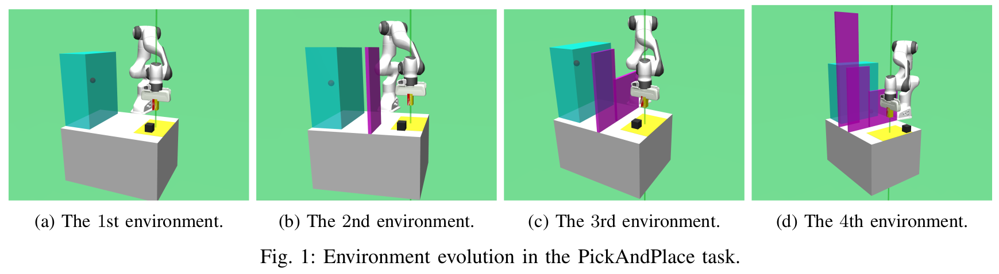
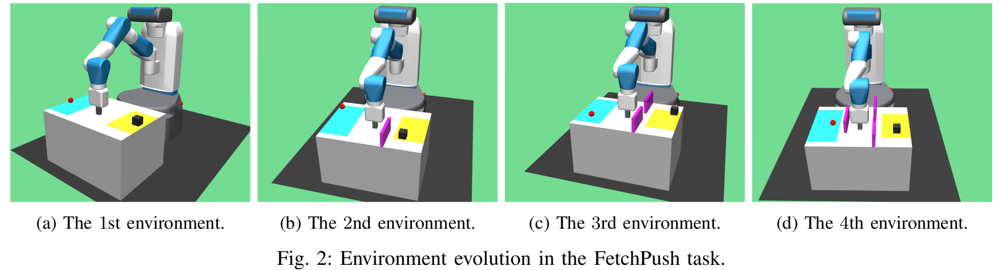

Abstract
Multi-goal reinforcement learning (RL) problems with sparse rewards are challenging tasks. These can be solved by hindsight experience replay (HER), which learns from failures by replacing the achieved state of failed experiences with the desired goal. However, if the desired goals are far away from the initial states, HER becomes inefficient. To deal with this issue, curriculum-based RL approaches decompose complex tasks into sequences of gradually more difficult tasks, by relying on heuristics that guide the agent to explore the environment more efficiently. One possible alternative is to generate curricula in an open-ended way, i.e., by creating novel and increasingly more complex tasks without bounds. In this paper, we propose an extension of HER called co-adapting hindsight experience replay (COHER), inspired by the recently proposed Paired Open-Ended Trailblazer (POET). The generated tasks and agent are coupled to optimize the behavior of the agent within each task-agent pair. After reaching a predefined success rate, the next task is generated and the agent leverages the skills acquired from the prior task to solve the next (and more challenging) one. We evaluate COHER on various sparse reward robotic tasks that require obstacle avoidance capabilities, and compare COHER with hindsight goal generation (HGG), curriculum-guided hindsight experience replay (CHER), and vanilla HER. The results show that COHER consistently outperforms the other methods and that the obtained policies can avoid obstacles without having explicit information about their position. Lastly, we deploy such policies to a real Franka robot for Sim2Real analysis. We observe that the robot can achieve the task by avoiding obstacles, whereas policies obtained with other methods cannot. The videos and code are publicly available at: https://erdiphd.github.io/COHER/
Proposed method
In the following, we assume that we are working on a robot manipulation task in an environment with obstacles. Therefore, in the description of the proposed method we will refer to this specific task. Nevertheless, the method could be in principle extended to other kinds of tasks, provided that the environments can be characterized by different levels of difficulty. nspired by the POET methodology, our proposed method works as follows. We execute a curriculum learning process in which we maintain a population of environments $\mathcal{X}$ (each one characterized by a different number of obstacles, in different positions and with different sizes) and an agent $\mathcal{Y}$ (i.e., a neural network). The environments can be generated either by the algorithm itself, or manually (as we actually do in the present study), and added to the environment population in order of increasing difficulty. In the population, the first environment $\mathcal{X}_{0}$ is always the most simple one, i.e., the one without obstacles. In order to decide when to generate the next environment, we pair the first environment $\mathcal{X}_{0}$ from the population $\mathcal{X}$ with the agent $\mathcal{Y}$ and optimize the agent's behavior in that environment until it reaches a predefined success rate. After satisfying the success rate, a the new environment $\mathcal{X}_{1}$, slightly harder than the previous one $\mathcal{X}_{0}$is generated (e.g., by adding obstacles and/or changing their positions or size). In principle, this process could be continued in an open-ended manner, i.e., without specific bounds. And as a result, we could continuously create ever more challenging environments, each one originating from the previous one, and the training could continue indefinitely. However, for practical experimental reasons we set an upper bound ($E$) to limit the maximum number of environments. With this approach, the agent seeks to solve the newly generated environments by utilizing its existing skills, which are acquired from the previous environments. In this way, the agent transfers and adapts its existing behavior to the new environment. Note that in the original POET the newly generated environments are not added to the current population if they are either too hard or too easy for the current population of agents. However, testing whether an environment is too hard or too easy in our case incurs an excessive computational cost, due to the complexity of task at hand. Moreover, we must ensure that the agents attain the predefined success rate in the current environment before solving the next one Algorithm describes our method in the form of pseudo-code. As shown in the pseudo-code, we start with a very simple environment and train it using the HER framework. When the performance becomes greater than or equal to the predefined success rate $\delta$, the next (more challenging) environment is created and the agent tries to solve the new environment with its current skills. Success is defined as reaching a target position within a distance set by a threshold $\epsilon_{R}$. After each episode, we run a predefined number of test rollouts ($n_{test-rollouts}$) with the current policy and calculate the success rate $\delta$ based on how many rollouts out of $n_{test-rollouts}$ succeeded in the task.
{kind=link}
Experiments
We conduct experiments on the MuJoCo simulation environments provided by OpenAI Gym and used as standard benchmark for multi-goal RL. Two standard manipulation tasks, both based on a 7-DOF fetch robotic manipulator, are chosen, namely pick-and-place and fetch-push. Because the environments may be generated in an open-ended way but training is computationally expensive, we limit the maximum number of environments ($E$) to $4$ for both tasks. That allows us to train on both tasks multiple times to prove our concept and provide statistics. \textbf{PickAndPlace (FrankaPickAndPlace-v1)}: The pick-and-place task with $4$ different environments is shown in Fig.1. The objective is to grasp the cube and bring it to the target position. The cube is shown as a black box, and its initial position is sampled uniformly within the yellow area. The target is the red dot, which is sampled uniformly within the blue region. The obstacles are colored in magenta. The task's difficulty is gradually increased by adding fixed blocks to the different locations on the table, and four different environments are generated in total. In the first environment, shown in Fig. 1, the robot learns how to pick up the cube and place it on the target position. In the second environment, shown in Fig. 1, an obstacle with 0.2m width, 0.02m depth, and 0.5m height is placed on the other side of the robot on the table. In the third environment, shown in Fig. 1, another obstacle with 0.3m width, 0.02m depth, and 0.3m height is placed. In the last environment, shown in Fig. 1, an obstacle with 0.2m width, 0.02m depth, and 0.9m height is placed in front of the target sampled area. \textbf{FetchPush (FetchPush-v1)}: A fetch-push task with $4$ different environments is shown in Fig. 2. A cube (the black box) and a target (the red dot) are sampled uniformly within the yellow and blue areas, respectively. The objective is to push the cube into the target position with a clamped gripper. The task's difficulty is gradually increased by adding fixed obstacles (colored in magenta) at different locations on the table, and also in this case four different environments are generated in total. In the first environment, shown in Fig. 2, the robot learns how to push the cube to the target point. In the second environment, shown in Fig. 2, the robot needs to adapt its learned policy from the previous environment to avoid the obstacle. In the third environment, shown in Fig. 2, there is only a 10cm gap within the two obstacles, and the robot should push the cube through this gap. Another obstacle is placed in the middle of the table in the fourth environment shown in Fig. 2, and the robot must avoid it in order to reach the target position. In both tasks, the state is a vector consisting of the position, orientation, linear velocity, and angular velocity of the robot's end-effector, as well as the position of the cube and target. Note that the information about the obstacles is not included in the state vector. It is assumed that the task is accomplished if cube reaches the goal within a given distance threshold , in which case it receives a non-negative reward $0$. We compare the performance of our framework (COHER) against vanilla HER, HGG and CHER. During training with COHER, environments co-adapt with the agent. When the current environment $\mathcal{X}_n$ performance reaches the predefined success rate $\delta$, the next environment $\mathcal{X}_{n+1}$ is selected and the agent tries to solve the new environment with its learned model. On the other hand, HER, HGG and CHER are trained directly on the last (i.e., the most difficult) environment in the population considered in COHER. Our goal is to demonstrate how the co-adapting training method accelerates learning. PickAndPlace and FetchPush are run with 20 and 40 different seeds (The number of runs is different for the two tasks due to limitations on the computational resources.), respectively, on a single machine with one CPU core. The success rate $\delta$ is chosen as $0.9$ and $0.7$. As the outcomes of each episode can be influenced by multiple random factors, the agent completes the task by using a different number of episodes at each run. Therefore, we illustrate the worst-case training results of COHER and HER and the best-case training of HGG and CHER among the different training results. These training results are illustrated in Fig. 3 for the PickAndPlace task and in Fig. 4 for the FetchPush task. It can be seen that COHER requires 54400 and 34550 episodes to complete the task, respectively for PickAndPlace and FetchPush. Concerning PickAndPlace, the first environment takes 24850 episodes, while the second and third environments are generated at 33800 and 46700 episodes, respectively. In other words, 8950 and 12900 episodes are required to reach the given success rate for them. As for FetchPush, solving the first environment takes 8950 episodes, while the second and third environments are generated at 12150 and 16550 episodes, respectively. In other words, 3200 and 4400 episodes are required to reach the given success rate for them. Compared to COHER, HER requires 223550 and 68200 episodes to reach the same success rate respectively for PickAndPlace and FetchPush. On the other hand, HGG and CHER get stuck most of the time in the presence of obstacles, because as discussed earlier their heuristic method for generating curriculum is based on Euclidean distance. For PickAndPlace in particular, HGG's success rate is always 0. The environment transition points are depicted as orange, brown, and purple dots in Fig. 3 and Fig. 4 respectively for the two tasks. It can be seen that, with COHER, the performance drops as soon as the next challenging environment is generated, but the RL algorithm adapts itself to the new environment until it reaches the success rate. The total number of episodes required to complete the two tasks in different runs is shown as a box plot in Fig. 3 and Fig. 4. The mean and median values are shown as a red dashed line and a solid green line, respectively. The corresponding numerical values are reported in Table . Fig. 3 and Fig. 4 show the number of episodes required for each environment in order to reach the predefined success rate. On average, the environments require 6411.29, 2575.81, 7948.39, and 5216.13 episodes for PickAndPlace and 5810.25, 2332.05, 3453.85, and 9741.03 episodes for FetchPush . Moreover, the figures shed light on the difficulty level of each environment. Since the robot starts in the first environment without knowing anything about the task, it takes on average a little bit longer than the second environment. In the second environment, the obstacle is located on the other side of the robot arm, and the location of the obstacle does not intersect with the sampled area of the initial position (i.e., the yellow area) of the cube. As a result, the robot can easily apply the skills it learned in the first environment. After the robot succeeds in the second environment, it learns to avoid the obstacle either by pushing the cube around it or by moving the cube above it, depending on the task. When the third environment is introduced, the robot arm is blocked more often than in the second environment. The reason is that the third environment has a much smaller gap than the second one, and also that the robot has just learned to go through the safe way, reaching the goal on the other side of the obstacle in the second environment, but now another obstacle is located on its safely learned path. As for the last environment, the obstacle is located in the middle of the table for FetchPush and on the left side of the table for PickAndPlace. The last environment for FetchPush takes the longest to be solved, because a newly located obstacle intersects with the sampled area of the target. Furthermore, the robot needs to push the cube around it and bring it to the target point.
 

| FrankaPickAndPlace | COHER | HER |
|---|---|---|
| mean | 53850 | 53850 |
| median | 52600 | 52600 |
| standard deviation | 294900 | 294900 |
| FetchPush | COHER | HER |
|---|---|---|
| mean | 53850 | 53850 |
| median | 52600 | 52600 |
| standard deviation | 294900 | 294900 |
How to run benchmarks
#!/bin/bash
Parameters can be changed using params.yaml file in the repo before starting the experiment
docker-compose run --rm coher